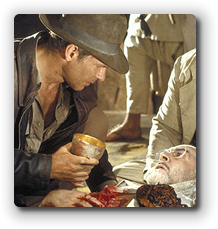
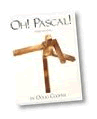

How to Write Loops
Writing perfect code the first time is something of a "Holy Grail" among programmers. By that I mean that most programmers long to do it, but the vast majority consider its attainment to be the stuff of legend.

Writing loops is one area where programming errors often crop up. Several years ago, however, I happened upon a technique developed by Doug Cooper, the Berkeley professor of "Oh! Pascal" fame, for building loops. I found that this technique really does increase your chances of building correct loops the first time, and it's worth the effort it takes to learn it.
Goal, Bounds & Plan
The first step in building a successful loop is to be able to describe (and separate) the loop's bound from the loop's goal, and then come up with a plan for reaching your goal.
The bound is the portion that makes it work "mechanically", while the goal of the loop is the work that you want to accomplish. The plan is the strategy you'll follow to both reach the bounds and, if possible, meet your goal.
Here's an example problem that we can use to examine the difference:
How many characters are in a sentence? Count the characters in a string until a period is encountered. If the string contains any characters, then it will contain a period. Count the period as well.
Using this problem statement, you'll find that
- the goal of the loop is to count the characters which precede a period.
- the bounds of the loop are "a period was encountered."
- the plan is to a) "read" a character, and b) increment a counter
We can use the same bounds with a different goal:
Print each character in a string until a period is encountered. Then, add an exclamation point and print a newline.
Notice that the bound is the same, but the goal is different. We're not counting, now we're printing. Our plan would change as well. Instead of adding one to a counter, in step b), we'd simply print the character, and, after the loop is finished, we'd print again.
 This course content is offered under a
CC
Attribution Non-Commercial license. Content in this course
can be considered under this license unless otherwise noted.
This course content is offered under a
CC
Attribution Non-Commercial license. Content in this course
can be considered under this license unless otherwise noted.